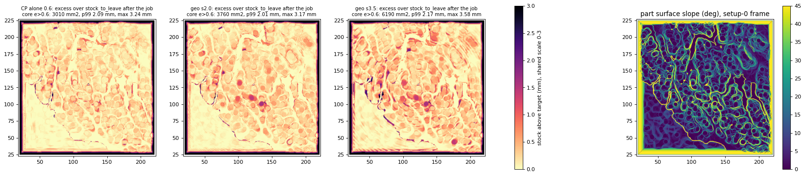
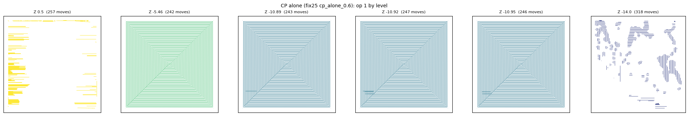
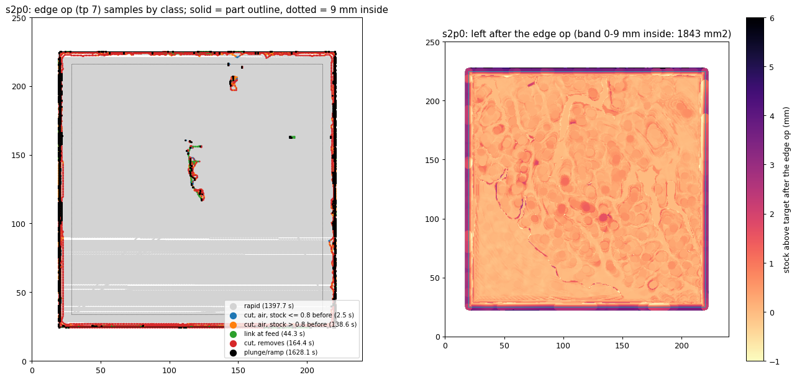
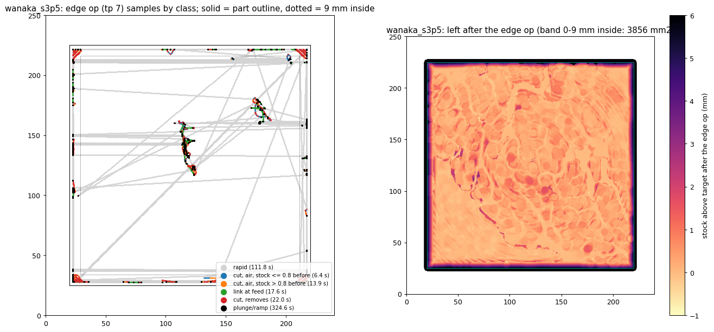
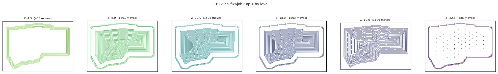
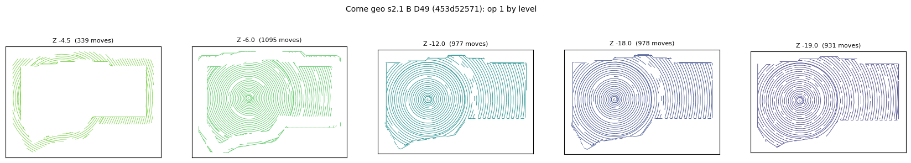
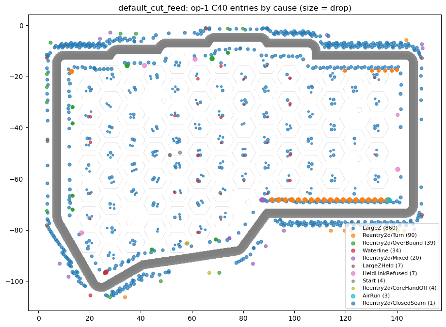
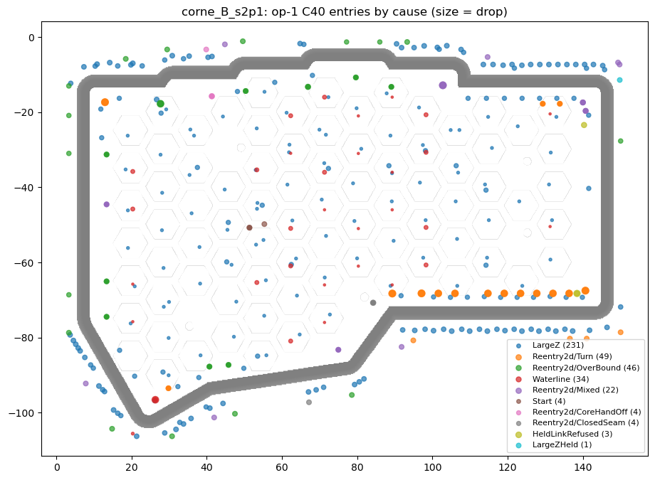
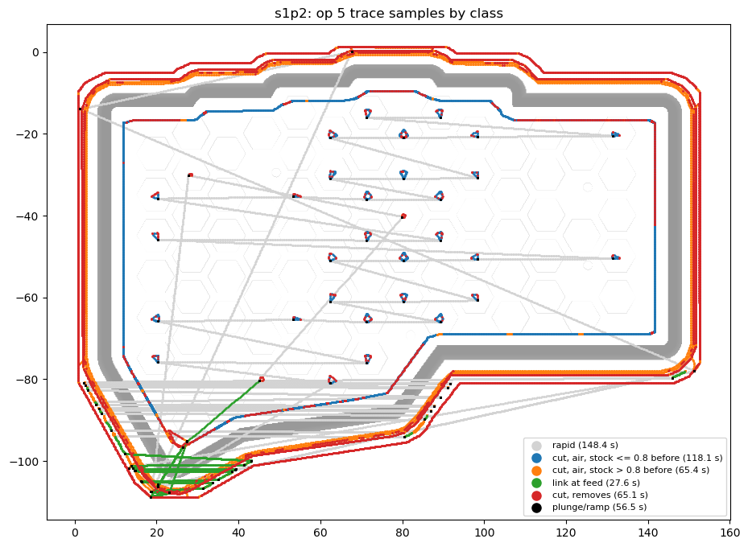
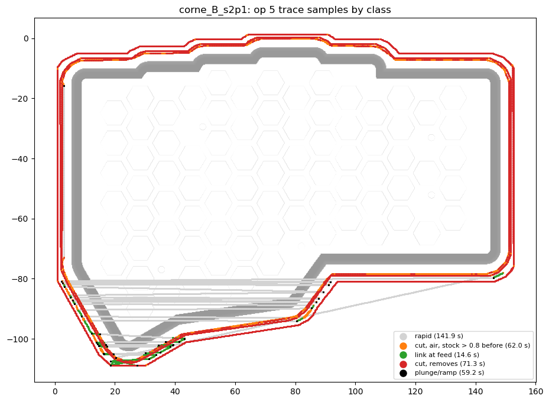

<title>Geodesic Adaptive G2</title>
<meta name="claude:viewport-fit-sides" content="cover">
<link rel="stylesheet" href="https://fonts.googleapis.com/css2?family=Barlow+Condensed:wght@500;600&family=IBM+Plex+Sans:wght@400;500;600&family=IBM+Plex+Mono:wght@400;500&display=swap">
<style>
/* Layout: one reading column; verdict first, then each fixture as a measured section. */
:root {
  --bg: #f6f7f5; --fg: #1d2420; --muted: #5d6862; --line: #d5dbd6; --panel: #ffffff;
  --accent: #2f6b4f; --op1: #2f6b4f; --op5: #c08a2b; --op3: #7d8a99; --warn: #a3471f;
  --display: "Barlow Condensed", "Arial Narrow", sans-serif;
  --body: "IBM Plex Sans", system-ui, sans-serif;
  --mono: "IBM Plex Mono", ui-monospace, monospace;
}
@media (prefers-color-scheme: dark) { :root:not([data-theme="light"]) {
  --bg: #141917; --fg: #e3e8e4; --muted: #9aa69f; --line: #2c3530; --panel: #1b211e;
  --accent: #7cc39e; --op1: #5fae86; --op5: #d9a24a; --op3: #8d9aa8; --warn: #e2875f; color-scheme: dark } }
:root[data-theme="dark"] {
  --bg: #141917; --fg: #e3e8e4; --muted: #9aa69f; --line: #2c3530; --panel: #1b211e;
  --accent: #7cc39e; --op1: #5fae86; --op5: #d9a24a; --op3: #8d9aa8; --warn: #e2875f; color-scheme: dark }
body { background: var(--bg); color: var(--fg); font: 15px/1.55 var(--body); }
main { max-width: 980px; margin: 0 auto; padding-block: 28px 64px;
  padding-left: max(16px, env(safe-area-inset-left, 0px)); padding-right: max(16px, env(safe-area-inset-right, 0px));
  display: grid; gap: 34px; }
h1, h2 { font-family: var(--display); font-weight: 600; letter-spacing: .01em; text-wrap: balance; margin: 0; }
h1 { font-size: 2.5rem; line-height: 1.05; }
h2 { font-size: 1.7rem; border-bottom: 1px solid var(--line); padding-bottom: 6px; }
h3 { font-size: 1rem; margin: 0; }
p { margin: 0; max-width: 68ch; }
section { display: grid; gap: 14px; min-width: 0; }
.eyebrow { font: 500 .78rem var(--mono); text-transform: uppercase; letter-spacing: .08em; color: var(--muted); }
.verdict { background: var(--panel); border: 1px solid var(--line); border-left: 4px solid var(--accent); padding: 18px 20px; display: grid; gap: 10px; }
.verdict strong { color: var(--accent); }
ol, ul { margin: 0; padding-left: 1.3em; max-width: 68ch; display: grid; gap: 4px; }
.num { font-family: var(--mono); font-variant-numeric: tabular-nums; text-align: right; white-space: nowrap; }
.tw { overflow-x: auto; }
table { border-collapse: collapse; font-size: .9rem; min-width: 520px; }
th, td { padding: 6px 10px; border-bottom: 1px solid var(--line); text-align: left; }
th { font: 500 .74rem var(--mono); text-transform: uppercase; letter-spacing: .06em; color: var(--muted); }
.bars { display: grid; gap: 8px; }
.bar { display: grid; grid-template-columns: minmax(120px, 230px) 1fr 76px; gap: 10px; align-items: center; }
.bl { font-size: .88rem; }
.bt { display: flex; height: 20px; background: var(--line); min-width: 0; }
.seg { display: block; height: 100%; }
.o1 { background: var(--op1); } .o5 { background: var(--op5); } .o3 { background: var(--op3); }
.legend { display: flex; gap: 16px; flex-wrap: wrap; font-size: .82rem; color: var(--muted); }
.legend i { display: inline-block; width: 12px; height: 12px; margin-right: 6px; vertical-align: -1px; }
.pair { display: grid; grid-template-columns: 1fr 1fr; gap: 14px; }
figure { margin: 0; display: grid; gap: 6px; min-width: 0; }
figure img { width: 100%; background: #fff; border: 1px solid var(--line); }
figcaption { font-size: .82rem; color: var(--muted); }
.warn { color: var(--warn); font-weight: 600; }
.src { font: .78rem var(--mono); color: var(--muted); }
@media (max-width: 640px) { .pair { grid-template-columns: 1fr; } .bar { grid-template-columns: 1fr 64px; } .bl { grid-column: 1 / -1; } h1 { font-size: 2rem; } }
</style>
<main>
<header style="display:grid;gap:8px">
  <div class="eyebrow">rs_cam · adaptive roughing research · G2 v6 · 2026-10-27</div>
  <h1>Geodesic Adaptive: promote it</h1>
  <p>The geodesic roughing op against contour-parallel (CP), the daily roughing strategy, on the two benchmark parts. Every time is the acceleration clock, the repo's best machine estimate.</p>
</header>

<section class="verdict">
  <h3>Recommendation: <strong>promote</strong>, with three conditions before the first real cut</h3>
  <ul>
    <li>On wanaka200 at CP's own 2.0 mm stepover, the geodesic job takes <span class="num">3,184</span> s against CP's <span class="num">5,777</span> s (×<span class="num">0.55</span>). Its peak tool load is <span class="num">0.72</span> against CP's <span class="num">2.62</span>.</li>
    <li>On Corne, the 6 mm roughing (op 1 + edge op) is ×<span class="num">1.07</span> of CP's op 1, at half CP's p99 load. The whole Corne job is still ×<span class="num">1.15</span>, because of the 3 mm rest op (G-LEVELPHASE, a shipped defect).</li>
    <li>Conditions: (1) the edge op stops pecking at levels where op 1 left nothing (D50, in progress); (2) the stepover default needs your choice (finish quality, below); (3) one test cut on the machine.</li>
  </ul>
</section>

<section>
  <h2>wanaka200 (terrain, 200 mm)</h2>
  <div class="bars"><div class="bar"><div class="bl">CP 2.0 mm</div><div class="bt"><span class="seg o1" style="width:100.00%" title="op 1 rough: 5,777 s"></span></div><div class="bv num">5,777 s</div></div>
<div class="bar"><div class="bl">Geodesic 2.0 mm</div><div class="bt"><span class="seg o1" style="width:55.12%" title="job: 3,184 s"></span></div><div class="bv num">3,184 s</div></div>
<div class="bar"><div class="bl">Geodesic 3.5 mm</div><div class="bt"><span class="seg o1" style="width:22.91%" title="op 1 rough: 1,324 s"></span><span class="seg o5" style="width:10.74%" title="edge op: 621 s"></span></div><div class="bv num">1,944 s</div></div></div>
  <div class="legend"><span><i class="o1"></i>op 1 rough (geodesic 2.0 mm: whole job)</span><span><i class="o5"></i>edge op on op 1's rest regions</span></div>
  <div class="tw"><table>
    <tr><th>op 1</th><th class=num>stepover mm</th><th class=num>load max</th><th class=num>p99</th><th class=num>p95</th><th class=num>mm over own bound</th></tr>
    <tr><td>CP</td><td class=num>2.0</td><td class=num>2.62</td><td class=num>1.00</td><td class=num>0.40</td><td class=num>2,258</td></tr><tr><td>Geodesic</td><td class=num>2.0</td><td class=num>0.72</td><td class=num>0.38</td><td class=num>0.36</td><td class=num>107</td></tr><tr><td>Geodesic</td><td class=num>3.5</td><td class=num>0.99</td><td class=num>0.64</td><td class=num>0.62</td><td class=num>16</td></tr>
  </table></div>
  <p>Load is the chip area per strip over a full-depth slot of the tool, the one shared definition (<span class="src">Cutter::mrr_cross_section_mm2</span>). 1.0 is a full slot. CP reaches 2.62 where a draped pass runs deeper than one depth per pass.</p>
  <h3>Finish quality on the back face</h3>
  <p>The back face has no finish op: the Back Rough floor is the final surface. So stock left above the target is a thickness error. A wider stepover leaves taller cusps under the flat tool.</p>
  <div class="tw"><table>
    <tr><th>after the job</th><th class=num>time s</th><th class=num>p95 mm</th><th class=num>max mm</th><th class=num>area over 0.6 mm, mm²</th></tr>
    <tr><td>CP 2.0 mm</td><td class=num>5,777</td><td class=num>0.85</td><td class=num>3.24</td><td class=num>3,010</td></tr><tr><td>Geodesic 2.0 mm</td><td class=num>3,184</td><td class=num>0.92</td><td class=num>3.17</td><td class=num>3,760</td></tr><tr><td>Geodesic 3.5 mm</td><td class=num>1,944</td><td class=num>1.18</td><td class=num>3.58</td><td class=num>6,190</td></tr>
  </table></div>
  <p>At 2.0 mm the geodesic job leaves about what CP leaves. At 3.5 mm it is three times faster than CP, but it leaves about twice the area over 0.6 mm. <strong>Your choice:</strong> the default stepover rule (Q12).</p>
  <figure><figcaption>Stock left above the target after each job, on one shared scale; right: surface slope.</figcaption></figure>
  <div class="pair">
    <figure><figcaption>CP op 1 by level: square offset rings.</figcaption></figure>
    <figure><figcaption>Geodesic 3.5 mm op 1 by level: one spiral per level.</figcaption></figure>
  </div>
  <div class="pair">
    <figure><figcaption>Edge op before D48 (2.0 mm): it cut into the holding frame and rapided across the part.</figcaption></figure>
    <figure><figcaption>Edge op after D48 (3.5 mm): inside op 1's reach. Most of its time is still pecks (D50 targets them).</figcaption></figure>
  </div>
</section>

<section>
  <h2>Corne (keyboard case, 83 switch holes)</h2>
  <div class="bars"><div class="bar"><div class="bl">CP</div><div class="bt"><span class="seg o1" style="width:32.85%" title="op 1 rough: 1,427 s"></span><span class="seg o3" style="width:32.54%" title="3 mm rest: 1,414 s"></span></div><div class="bv num">2,841 s</div></div>
<div class="bar"><div class="bl">Geodesic 2.1 mm (now)</div><div class="bt"><span class="seg o1" style="width:24.76%" title="op 1 rough: 1,076 s"></span><span class="seg o5" style="width:10.45%" title="edge op: 454 s"></span><span class="seg o3" style="width:39.89%" title="3 mm rest: 1,733 s"></span></div><div class="bv num">3,262 s</div></div>
<div class="bar"><div class="bl">Geodesic 1.2 mm (before D43/D44)</div><div class="bt"><span class="seg o1" style="width:43.11%" title="op 1 rough: 1,873 s"></span><span class="seg o5" style="width:14.00%" title="edge op: 608 s"></span><span class="seg o3" style="width:42.88%" title="3 mm rest: 1,863 s"></span></div><div class="bv num">4,344 s</div></div></div>
  <div class="legend"><span><i class="o1"></i>op 1 rough (6 mm)</span><span><i class="o5"></i>edge op</span><span><i class="o3"></i>3 mm rest op</span></div>
  <div class="tw"><table>
    <tr><th>op 1</th><th class=num>stepover mm</th><th class=num>load max</th><th class=num>p99</th><th class=num>p95</th><th class=num>mm over own bound</th></tr>
    <tr><td>CP</td><td class=num>1.2</td><td class=num>1.03</td><td class=num>1.01</td><td class=num>0.78</td><td class=num>3,512</td></tr><tr><td>Geodesic</td><td class=num>2.1</td><td class=num>1.00</td><td class=num>0.49</td><td class=num>0.39</td><td class=num>171</td></tr>
  </table></div>
  <p>Corne is a hard case for every adaptive strategy: many tiny separate pockets. The two fixes from this round cut the geodesic op's entries in half (D43, the load-based split) and kept the edge op on the edge band (D44 and D48).</p>
  <div class="pair">
    <figure><figcaption>CP op 1 by level.</figcaption></figure>
    <figure><figcaption>Geodesic 2.1 mm op 1 by level.</figcaption></figure>
  </div>
  <div class="pair">
    <figure><figcaption>Op 1 entries by cause before D43 (1.2 mm): 1069 entries.</figcaption></figure>
    <figure><figcaption>Op 1 entries after D43 (2.1 mm).</figcaption></figure>
  </div>
  <div class="pair">
    <figure><figcaption>Edge op before D44: it lapped the case wall and every hole.</figcaption></figure>
    <figure><figcaption>Edge op after D44 and D48: the edge band only.</figcaption></figure>
  </div>
</section>

<section>
  <h2>What is built, and what is next</h2>
  <ul>
    <li>Research branch (adaptive-instruments): D43 load-based split, D44 rest regions, D47 export gate fix (G-RESTSTALE), D48 frame fix (G-RESTFRAME). All gates green.</li>
    <li>Integration branch (geodesic-integration, from master): step 1, the per-move feed cap, done with byte parity. Next: the export gate fix, then the step 7 design (the "Geodesic Adaptive" strategy in the config, the GUI and MCP).</li>
    <li>Shipped defects found on the way, which also slow CP: G-LEVELPHASE, G-CPRAPID, G-AIRRAMP, G-SIMFEED.</li>
  </ul>
  <p class="src">Sources: P15 D37, D45, D49; clocks in phase3/fix26/three_clocks_*.json; P15 D47, D49, D51. Numbers: g2_v6/numbers_v6.json; checks: g2_v6/assert_v6.py.</p>
</section>
</main>
